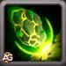
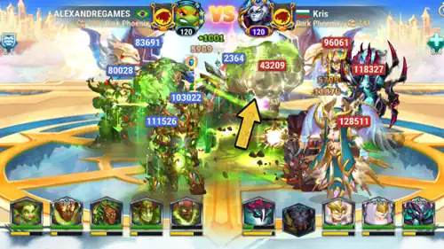
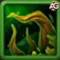
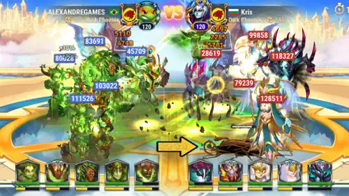
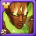
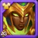
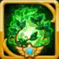
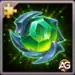
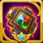
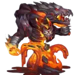

Guide Eden Titan : Super Titan de Terre & controleHero Wars Alliance
- Par : Alexandre Domingos. .
Salut les amis, bon retour parmi nous ! Si vous jouez a Hero Wars Alliance depuis un certain temps, vous avez surement deja entendu le nom d'Eden dans les discussions sur les combats de Titans. Et il y a une tres bonne raison a cela : Eden est l'un des Titans de Terre les plus emblematiques et les plus redoutables de tout le jeu. Ce colosse ne se contente pas de frapper fort ; il peut litteralement engloutir un ennemi entier et l'enterrer sous terre pendant plusieurs secondes, laissant le reste de l'equipe adverse sans defense face a l'assaut de votre equipe.
Dans ce guide, je vais vous expliquer tout ce que vous devez savoir sur Eden : ses competences, ses meilleurs artefacts, les skins a prioriser, comment construire l'equipe Full Terra autour de lui, comment le contrer et comment l'utiliser dans le donjon. Que vous soyez tout nouveau avec les Titans ou que vous cherchiez a optimiser votre equipe de Terre au plus haut niveau, ce guide est fait pour vous. Creusons tout cela !

Eden est un Titan de Terre colossal, capable a la fois de lancer des attaques de zone devastatrices et d'immobiliser des ennemis sous terre. Son controle aleatoire rend les combats imprevisibles et difficiles a contrer : vous ne savez jamais quel ennemi sera enterre ensuite. Combine a la puissante composition Full Terra, Eden occupe solidement le rang S dans la meta des Titans de Hero Wars Alliance.

Guide Eden - Table des matieres
Qui est Eden dans Hero Wars Alliance ?
Eden est le Super Titan de Terre : une unite de Tireur et de Controle devastatrice, qui combine d'enormes degats de zone avec un controle de foule terrifiant. Sa competence la plus celebre, Prison souterraine, attire un ennemi aleatoire sous terre pendant 6 secondes completes, puis l'etourdit pendant 2 secondes supplementaires. Cela fait 8 secondes pendant lesquelles l'un des Titans adverses est totalement retire du combat. Voyez-le comme une force de la nature : inarretable, capable d'ebranler la terre et impossible a ignorer.

- Role : Super Titan / Tireur / Controle
- Element : Terre
- Position : Premiere ligne
- Synergie : Titans de Terre (Angus, Avalon, Verdoc, Sylva)
Eden est la pierre angulaire de la composition Full Terra, actuellement l'une des equipes de Titans les plus fortes de la meta. Sa competence destructrice qui projette des rochers nettoie des groupes d'ennemis, tandis que le ciblage imprevisible de Prison souterraine oblige les adversaires a deviner et les empeche de planifier correctement leur defense. Avec Verdoc qui amplifie les degats de toute l'equipe de Terre, Eden devient une force presque inarretable en attaque comme en defense.
Statistiques maximales d'Eden - Hero Wars Alliance
Voici les statistiques maximales d'Eden a pleine puissance. Ces chiffres montrent a quel point ce Titan devient imposant lorsqu'il est entierement investi. Comprendre ces statistiques vous aidera a prendre de meilleures decisions pour les skins et les artefacts plus loin dans ce guide :
- Sante : 11,152,573
- Attaque physique : 774,001
- Degats supplementaires contre les Titans d'Eau : 255,000
- Defense supplementaire contre les Titans d'Eau : 100,500
La reserve de sante d'Eden, superieure a 11.1 millions, est extraordinaire et fait partie des plus elevees du jeu. Cela le rend presque impossible a eliminer rapidement avant qu'il n'active ses competences. Son Attaque physique de 774,001 alimente les enormes degats de zone de Fardeau de la creation (350% ATK), et les bonus contre les Titans d'Eau renforcent son avantage elementaire dans les bons affrontements.
Avantages et inconvenients d'Eden - Hero Wars Alliance
Avantages
- Reserve de sante massive (plus de 11 millions) - extremement difficile a tuer
- Prison souterraine retire un ennemi du combat pendant 8 secondes au total
- Fardeau de la creation inflige des degats de zone devastateurs a 350% ATK
- S-tier en combats de Titans PvP comme en Donjon
- Noyau de la meta Full Terra - l'une des compositions de Titans les plus fortes
- Avantage elementaire contre les Titans d'Eau
Inconvenients
- Prison souterraine cible au hasard - elle peut enterrer un ennemi peu prioritaire au lieu de la menace cle
- Faible contre les Titans de Feu, surtout Araji
- Aucune immunite aux debuffs - il peut etre interrompu ou ralenti
- Son efficacite depend beaucoup du reste de l'equipe de Terre (Verdoc est essentiel)
Guide des competences d'Eden - Hero Wars Alliance
Comprendre les competences d'Eden est la cle pour l'utiliser efficacement et pour le contrer lorsqu'il se trouve dans l'equipe adverse. Decomposons chaque capacite en detail.

Fardeau de la creation (competence de degats de zone)
Description en jeu : Souleve un enorme bloc de roche du sol et le lance au centre de l'equipe ennemie. Tous les ennemis proches de l'impact subissent des degats.
Explication de la competence : Fardeau de la creation est la competence offensive principale d'Eden. Voici exactement ce qui se passe lorsqu'il l'active :
L'attaque : Eden souleve un enorme bloc de roche depuis le sol et le projette directement au centre de l'equipe ennemie. L'impact cree une onde de choc massive, et tous les ennemis proches de la zone d'impact subissent des degats. Ce sont des degats de zone purs et devastateurs, capables de toucher plusieurs Titans en meme temps.
Degats : 2,709,002
Formule : (350% de l'Attaque physique) - calcule comme (3.50 x 774,001 = 2,709,003).
2,709,002 degats physiques a tous les ennemis proches du centre
Pour mettre cela en perspective : la plupart des Titans ont entre 5 et 11 millions de Sante. Un seul coup de Fardeau de la creation peut retirer 25% a 50% de la barre de vie d'un Titan en une seule frappe, tout en touchant plusieurs ennemis a la fois. Si toute l'equipe ennemie est regroupee, chaque Titan subit cet enorme coup simultanement.

Pourquoi est-ce important en combat d'equipe ? Beaucoup de compositions de Titans comptent sur leur capacite a rester en vie assez longtemps pour lancer leurs competences. Fardeau de la creation d'Eden applique une pression extreme tres tot sur toute la ligne ennemie, reduisant la Sante de chacun avant meme que leurs capacites ne s'activent. Cela synergise parfaitement avec les buffs de Verdoc, qui amplifient encore davantage les degats.

Prison souterraine (competence de controle)
Description en jeu : Lie un ennemi aleatoire avec des racines et tire la victime sous terre pendant 6.0 secondes. Une fois l'ennemi libere, il reste etourdi pendant 2 secondes supplementaires. Si la cible est le dernier ennemi sur le champ de bataille, elle ne sera pas tiree sous terre, mais l'effet d'etourdissement s'appliquera quand meme.
Explication de la competence : C'est la capacite la plus puissante et la plus redoutee d'Eden. Voici son fonctionnement etape par etape, pour bien comprendre exactement ce qu'elle fait :
Etape 1 - Selection de la cible : Eden active Prison souterraine et selectionne un Titan ennemi aleatoire. C'est crucial : le ciblage est totalement aleatoire, ce qui rend les combats impliquant Eden naturellement imprevisibles. Vous ne pouvez jamais etre certain de l'ennemi qui sera retire du combat.
Etape 2 - L'entrave : L'ennemi choisi est lie par des racines, puis tire sous terre. Tant qu'il est sous terre, ce Titan est completement retire du combat : il ne peut pas attaquer, utiliser de competences, ni etre cible par l'une ou l'autre equipe.
Etape 3 - Duree sous terre : Le Titan enterre reste sous terre pendant 6.0 secondes completes. Pendant ce temps, votre equipe profite d'un avantage numerique en 5 contre 4. C'est enorme et cela peut completement faire basculer le combat en votre faveur.
Etape 4 - Liberation et etourdissement : Lorsque l'ennemi ressort de terre apres 6 secondes, il subit immediatement un etourdissement supplementaire de 2 secondes. Le temps total pendant lequel ce Titan est neutralise est donc de 8 secondes : 6 secondes sous terre plus 2 secondes d'etourdissement.
Cas special : Si la cible est le dernier ennemi survivant sur le champ de bataille, elle ne sera pas tiree sous terre, car cela n'aurait pas d'interet. Cependant, l'effet d'etourdissement de 2 secondes s'applique toujours.
Temps de recharge : Temps de recharge initial : 8 secondes - puis toutes les 19 secondes ensuite.
Ennemi aleatoire tire sous terre pendant 6 s + 2 s d'etourdissement a la liberation = 8 secondes de neutralisation totale

Pourquoi le ciblage aleatoire est-il si important ? Il rend Eden incroyablement difficile a affronter mentalement. Votre adversaire ne peut jamais planifier autour du Titan qui sera retire. Si Eden enterre le principal infligeur de degats ennemi tot dans le combat, toute l'equipe adverse peut s'effondrer. Meme s'il enterre une cible moins critique, votre equipe conserve un avantage en 5 contre 4 pendant 8 secondes. Cette part d'aleatoire cree une pression constante et de l'incertitude pour l'adversaire, exactement ce que vous voulez.
Note strategique d'Alexandre : Prison souterraine d'Eden enterre un ennemi aleatoire pendant 6 secondes, puis ajoute 2 secondes d'etourdissement. Cet aspect aleatoire est a la fois sa plus grande force et son element le plus imprevisible. Dans la meta actuelle, l'equipe Full Terra est construite pour exploiter cela : pendant qu'un ennemi est enterre, les buffs de Verdoc amplifient les degats que vos autres Titans de Terre infligent aux quatre ennemis restants. L'adversaire ne peut pratiquement pas se defendre contre cette combinaison : il ne sait jamais qui sera enterre, et lorsqu'un Titan disparait sous terre, le calcul du combat ne joue plus en sa faveur.
Meilleur skin pour le Titan Eden - Hero Wars Alliance
Eden possede actuellement deux skins : le Skin par defaut et le Skin primordial. Fait inhabituel, les deux skins augmentent la meme statistique : l'Attaque physique. Voyons ce que cela signifie pour votre strategie d'amelioration.

Skin par defaut (Attaque physique)
Attaque physique : +196,800
Le Skin par defaut augmente l'Attaque physique d'Eden, ce qui amplifie directement ses principales sources de degats. Fardeau de la creation evolue a 350% ATK, donc le bonus de +196,800 se transforme en un enorme coup supplementaire de (3.50 x 196,800 = 688,800 degats de zone supplementaires). Ces degats supplementaires sur chaque Fardeau de la creation peuvent faire la difference entre briser l'equipe ennemie ou la laisser survivre assez longtemps pour riposter.
Priorite d'evolution pour le PVP : Tres elevee L'Attaque physique est la statistique de degats la plus importante d'Eden. Chaque amelioration augmente directement les degats de Fardeau de la creation et de ses attaques de base. Cela devrait etre votre priorite numero un pour les skins.
Priorite d'evolution pour le Donjon : Elevee Plus d'attaque signifie des combats de donjon plus rapides. En tant que Titan de Terre central, Eden profite enormement de ce bonus de degats dans les longues progressions de donjon.

Skin primordial (Attaque physique)
Attaque physique : +196,800
Le Skin primordial augmente lui aussi l'Attaque physique de +196,800 : exactement la meme statistique et la meme valeur que le Skin par defaut. C'est inhabituel, car la plupart des Titans ont des skins qui couvrent des statistiques differentes. Pour Eden, les deux skins ont la meme valeur et la meme efficacite.
Puisque les deux skins offrent une valeur identique, vous pouvez les ameliorer dans l'ordre que vous preferez, selon les ressources que vous avez. Le bonus combine des deux skins au maximum donne a Eden +393,600 d'Attaque physique, ce qui se traduit par un enorme bonus de (3.50 x 393,600 = 1,377,600 degats de zone supplementaires) sur chaque Fardeau de la creation.
Priorite d'evolution pour le PVP : Tres elevee - Meme priorite que le Skin par defaut. Ameliorez les deux des que possible, car ils offrent une valeur equivalente.
Priorite d'evolution pour le Donjon : Elevee - Les deux skins sont egalement precieux pour le contenu de donjon. Ameliorez-les en parallele chaque fois que possible.
Resume de priorite des skins :
Les deux skins sont equivalents : le Skin par defaut (Attaque physique +196,800) et le Skin primordial (Attaque physique +196,800) offrent des bonus identiques.
Strategie : Ameliorez d'abord le Skin par defaut, car il n'y a aucun cout d'achat pour ce skin. Les deux skins augmentent directement les degats de zone de Fardeau de la creation.
Bonus combine maximal : +393,600 d'Attaque physique au total, soit +1,377,600 degats ajoutes a Fardeau de la creation.
Priorite d'evolution des artefacts d'Eden - Hero Wars Alliance
Les artefacts d'Eden suivent le modele standard des Titans de Terre. Son Arme (Ame d'Andvari) est unique a Eden, tandis que la Couronne de Terre (Livre) et le Sceau de defense (Anneau) sont partages avec les autres Titans de la classe Terre. Ameliorer ces artefacts est essentiel pour atteindre le plein potentiel d'Eden ; voyons chacun d'eux et l'ordre exact de priorite.

Ame d'Andvari (artefact d'arme)
Chance d'activation : 100%
Effet : Defense supplementaire contre les Titans d'Eau +150,000
L'Ame d'Andvari est l'artefact d'Arme unique d'Eden. Avec une chance d'activation garantie de 100%, il se declenche toujours et fournit a Eden ainsi qu'a toute l'equipe +150,000 de Defense supplementaire contre les Titans d'Eau. Comme la Terre contre naturellement l'Eau dans le systeme d'affrontements elementaires, cet artefact renforce cet avantage en rendant Eden et ses allies encore plus difficiles a endommager pour les Titans d'Eau.
Voyez cela ainsi : lorsque votre equipe de Terre affronte une equipe d'Eau, ce qui est deja un affrontement tres favorable, l'Ame d'Andvari ajoute une couche de protection supplementaire pour Eden et ses allies. Il devient encore plus durable dans ces combats, survit plus longtemps et peut lancer davantage de Prisons souterraines et de Fardeaux de la creation.
Priorite d'evolution pour le PVP : Tres elevee L'activation garantie a 100% avec un important bonus de defense en fait une premiere priorite fiable. Ameliorez-le en premier, car il augmente directement la survie d'Eden dans l'affrontement Terre contre Eau, l'un des plus courants.
Priorite d'evolution pour le Donjon : Elevee Dans les rencontres de donjon impliquant des Titans d'Eau, cet artefact augmente fortement la longevite et la performance globale d'Eden.

Couronne de Terre (artefact de livre)
Degats supplementaires contre les Titans d'Eau : +255,000
Defense supplementaire contre les Titans d'Eau : +100,500
La Couronne de Terre est l'artefact de Couronne standard pour tous les Titans de classe Terre. Elle fournit a la fois des bonus offensifs et defensifs specifiquement contre les Titans d'Eau : +255,000 degats supplementaires et +100,500 defense supplementaire. C'est enorme dans les affrontements contre l'Eau : votre Eden frappe plus fort ET subit moins de degats en meme temps.
En pratique, la Couronne de Terre signifie que lorsqu'Eden combat des Titans d'Eau, chaque coup inflige beaucoup plus de degats tandis qu'Eden en absorbe beaucoup moins. Combinee a l'Ame d'Andvari, Eden devient pratiquement impenetrable pour les Titans d'Eau au niveau maximum.
Gardez a l'esprit que cette Couronne ne profite qu'aux affrontements contre l'Eau. Contre les Titans de Feu, de Terre, de Lumiere ou de Tenebres, elle n'apporte aucun avantage. C'est pourquoi elle passe apres le Sceau de defense ci-dessous, qui offre une valeur universelle dans tous les affrontements.
Priorite d'evolution pour le PVP : Moyenne-elevee - Tres puissante dans les affrontements contre l'Eau, qui sont courants. Ameliorez-la apres le Sceau de defense si vous combattez des compositions mixtes, ou plus tot si les equipes d'Eau dominent votre serveur.
Priorite d'evolution pour le Donjon : Moyenne - Precieux dans les sections du donjon contre l'Eau, mais le Sceau de defense offre une valeur universelle plus constante dans toutes les rencontres de donjon.

Sceau de defense (artefact d'anneau)
Attaque physique : +82,500
Sante : +4,575,000
Le Sceau de defense est l'artefact d'Anneau d'Eden et l'un des artefacts universels les plus puissants du jeu. Il fournit une combinaison d'offense (Attaque physique +82,500) et de survie (Sante +4,575,000) qui fonctionne contre tous les adversaires, quel que soit leur element.
Le bonus d'Attaque physique signifie que chaque coup de Fardeau de la creation devient plus fort : (3.50 x 82,500 = 288,750 degats de zone supplementaires) grace a cet artefact seul. Le bonus de Sante de plus de 4.5 millions est absolument massif : il augmente la reserve totale de Sante d'Eden de pres de 41%, ce qui en fait l'une des unites les plus durables du jeu une fois entierement amelioree.
Cet artefact fonctionne contre les equipes de Feu, d'Eau, de Lumiere, de Tenebres, et meme dans les affrontements miroir de Terre. Il n'y a pratiquement aucune situation ou il n'aide pas. Cette valeur universelle en fait probablement l'artefact le plus important pour la performance globale.
Priorite d'evolution pour le PVP : Elevee - Des statistiques universelles qui fonctionnent dans tous les affrontements. Le bonus massif de Sante garde Eden en vie plus longtemps dans toutes les situations, tandis que le bonus ATK renforce directement Fardeau de la creation. Excellente valeur globale.
Priorite d'evolution pour le Donjon : Elevee - Plus de Sante et plus de degats dans chaque rencontre de donjon. C'est une valeur constamment utile a chaque etage et contre chaque type elementaire.
Resume de priorite des artefacts :
1er : Ame d'Andvari (Arme) - 100% d'activation, +150,000 defense contre l'Eau. Meilleur artefact de survie.
2e : Sceau de defense - ATK universelle + Sante massive. Fonctionne dans tous les affrontements.
3e : Couronne de Terre - Enorme bonus contre les Titans d'Eau (offense + defense), mais situationnel.
Astuce : Si les equipes d'Eau dominent votre serveur, envisagez de passer la Couronne de Terre en 2e priorite. Les bonus combines contre l'Eau de l'Ame d'Andvari et de la Couronne de Terre rendent Eden presque invincible dans ces affrontements.
Comment contrer le Titan Eden - Hero Wars Alliance
Eden est incroyablement puissant, mais il possede des faiblesses elementaires claires. Voici comment le battre efficacement :

Araji - Le contre dur
Araji est le contre le plus efficace contre Eden et toute la composition Full Terra. En tant que Titan de Feu, Araji possede l'avantage elementaire contre tous les Titans de Terre. Son Rayon incinerant inflige des degats soutenus a 1,422 ATK par seconde pendant 7 secondes, et il se verrouille sur l'ennemi le plus proche, ce qui le rend devastateur contre la grande zone de contact d'Eden. Plus important encore, le Heraut de la flamme d'Araji accelere tous les allies de 30% pendant 8 secondes, donnant a toute l'equipe de Feu un enorme bonus de vitesse d'activation qui leur permet d'utiliser leurs competences avant que l'equipe de Terre ne puisse repondre. La combinaison de l'avantage elementaire, des degats soutenus et du buff de vitesse fait d'Araji le meilleur contre individuel aux compositions Full Terra.

Une equipe complete de Titans de Feu incluant Alecto (Ignis, Asherona, Araji, Alecto, Moloch) domine completement les compositions Full Terra. Alecto, l'hybride Elarite/Feu, inflige d'enormes degats explosifs a l'ennemi ayant l'Attaque la plus elevee, tandis que son artefact Aile de Zorval buffe toute l'equipe de Feu a chaque ultime. L'avantage elementaire du Feu contre la Terre, combine a la puissance de burst individuelle d'Alecto, en fait la composition la plus dangereuse pour l'equipe d'Eden.
Meilleures equipes pour le Titan Eden - Hero Wars Alliance
Eden brille dans la composition Full Terra : une equipe complete de Titans de Terre qui fait actuellement partie des plus fortes de la meta, surtout en attaque, ou les buffs de Verdoc creent une force offensive ecrasante.
Eden (Super Titan - Terre) : La pierre angulaire de cette equipe. Fardeau de la creation applique une enorme pression de zone, tandis que Prison souterraine retire un ennemi cle du combat pendant 8 secondes, donnant a votre equipe un avantage numerique prolonge. Son immense reserve de Sante lui permet de rester assez longtemps sur le terrain pour utiliser ses deux competences plusieurs fois.
Repartition des roles dans l'equipe
- Sylva - Support et buffer pour l'equipe de Terre. Elle fournit des buffs essentiels a toute la composition.
- Eden - Super Titan principal. Il controle le champ de bataille avec Prison souterraine et inflige d'enormes degats de zone avec Fardeau de la creation.
- Verdoc - Le membre le plus critique en attaque. Ses buffs amplifient les degats de tous les Titans de Terre et sont la principale raison pour laquelle Full Terra est S-tier dans la meta actuelle.
- Avalon - Titan de support qui complete la synergie de l'equipe de Terre et ajoute une utilite supplementaire.
- Angus - Tank/DPS. Il renforce la premiere ligne et ajoute des degats de Terre soutenus, fournissant la durabilite sur laquelle le role de Tireur d'Eden ne se concentre pas.
Equipe - Faiblesses et points a considerer
Faible contre :
- Equipes de Feu, surtout avec Araji et Alecto : Le Feu a l'avantage elementaire sur la Terre. Les degats soutenus d'Araji et son buff de vitesse de 30%, combines aux degats explosifs d'Alecto, peuvent submerger la composition Full Terra avant qu'elle ne se mette en place.
- Equipe Full Feu (Ignis, Asherona, Araji, Alecto, Moloch) : Cette composition de Feu precise avec Alecto domine completement Full Terra avec un score presque parfait au niveau maximum. Si votre adversaire possede cet alignement, vous avez besoin d'une strategie alternative en attaque.
Note strategique : En defense, Full Terra est tres difficile a briser pour les compositions qui ne sont pas de Feu. En attaque, avec les buffs de Verdoc actifs, Full Terra domine l'Eau, les Tenebres et la plupart des compositions mixtes. La plus grande vulnerabilite de l'equipe reste toujours le Feu, surtout lorsque cette equipe de Feu inclut a la fois Araji et Alecto. Planifiez vos cibles d'attaque en consequence.
Eden dans le Donjon - Hero Wars Alliance
Eden est S-tier dans le Donjon, a la fois comme Titan individuel et comme membre de l'equipe Full Terra. Voici tout ce que vous devez savoir pour l'utiliser efficacement dans le contenu de donjon :
Tier Donjon : S-Tier | Position : Ligne arriere (Donjon) | Role : Super Titan, Tireur, Controle
Forces d'Eden dans le Donjon
Degats de zone ecrasants : La force d'Eden dans le donjon est indeniable. Sa capacite a infliger d'enormes degats de zone avec Fardeau de la creation et a controler le champ de bataille avec Prison souterraine peut renverser n'importe quelle rencontre. Dans chaque combat, Eden aide votre equipe non seulement a survivre, mais aussi a s'imposer, maximisant vos chances de reussite et de progression dans les etages plus difficiles.
Progression de l'equipe : L'une des plus grandes contributions d'Eden dans le donjon est sa capacite a faciliter la progression de l'equipe. Sa presence redoutable permet a votre equipe de descendre plus profondement dans le donjon, d'affronter de plus grands defis et de recolter de meilleures recompenses en chemin. Avec Eden dans votre alignement, vous atteindrez des zones inexplorees et des etages qui semblaient auparavant impossibles.
Synergie Tireur + Tank avec Angus : Meme si Eden excelle comme Super Titan Tireur offensif, il est important de l'associer a un tank dedie. Angus, lui aussi du puissant element Terre, garantit que votre equipe reste durable face aux ennemis les plus difficiles du donjon. Les capacites defensives d'Angus completent la puissance offensive de Tireur d'Eden, creant un duo redoutable capable de resister meme aux rencontres les plus punitives.
Avantage elementaire dans le Donjon : La force elementaire d'Eden contre les Titans d'Eau s'aligne parfaitement avec de nombreuses rencontres de donjon ou les Titans de Terre dominent. Cela vous permet d'investir en Eden avec confiance, en sachant que ses capacites brilleront particulierement contre les puissants ennemis de l'element Eau dans les etages plus profonds du donjon.
Comment obtenir les Pierres d'ame d'Eden : Evenements et Sphere d'invocation
Conclusion - Eden, le Titan de Terre inarretable
Les amis, j'espere sincerement que ce guide vous a aide a comprendre a quel point Eden est puissant dans Hero Wars Alliance. C'est un Super Titan Tireur et l'un des Titans les plus complets du jeu. Sante massive, degats de zone devastateurs et l'un des controles de foule les plus imprevisibles des combats de Titans. Quand Eden enterre un ennemi sous terre pendant 8 secondes, tout le combat bascule. Et avec les buffs de Verdoc qui amplifient l'equipe Full Terra, la combinaison devient presque impossible a arreter.
Mon conseil principal : ameliorez les deux skins de facon equivalente, car ils augmentent tous les deux l'Attaque physique. Plus d'ATK signifie plus de degats sur chaque Fardeau de la creation. Pour les artefacts, commencez par l'Ame d'Andvari pour le bonus de defense garanti contre les Titans d'Eau, puis concentrez-vous sur le Sceau de defense pour les gains universels d'ATK et de Sante.
Pour votre equipe, associez Eden a Sylva, Verdoc, Avalon et Angus afin d'obtenir la composition Full Terra la plus forte disponible. Cet alignement est S-tier en attaque et tres solide en defense. Faites attention aux equipes de Feu, surtout celles qui utilisent Araji et Alecto, car elles sont la plus grande menace d'Eden dans la meta actuelle.
Dans le Donjon, Eden est irremplacable. Ses degats de zone et son controle de foule poussent votre equipe plus loin que presque n'importe quel autre Titan. Associez-le a Angus pour former une premiere ligne de Terre resistante, capable de tenir meme dans les etages de donjon les plus difficiles.
Merci beaucoup d'avoir lu ce guide ! S'il vous a aide, partagez-le avec votre guilde : le savoir partage rend toute la communaute plus forte. Si vous avez des questions ou si vous voulez partager vos propres strategies avec Eden, laissez-les dans les commentaires ci-dessous. Je lis chacun d'eux. A bientot sur le champ de bataille !
Explorez de nouvelles strategies avec nos guides en vedette !
 Guide Alecto Titan : premiere Tireuse Elarite
Guide Alecto Titan : premiere Tireuse Elarite Guide Lumira Titan
Guide Lumira Titan Guide Umbra Titan
Guide Umbra Titan Laissez votre avis !
Avez-vous aime notre Guide Eden Titan ? Y a-t-il quelque chose que vous n'avez pas compris ou souhaitez-vous suggerer des changements ? Nous vous invitons a rejoindre la section des commentaires sur la page du blog Alexandre Games. Exprimez librement votre opinion, posez vos questions et partagez vos suggestions.
Cliquez sur le bouton ci-dessous pour commencer :